Generalist
Classic, Digital, Analog, Digital+ and Robots, with Expert variants.
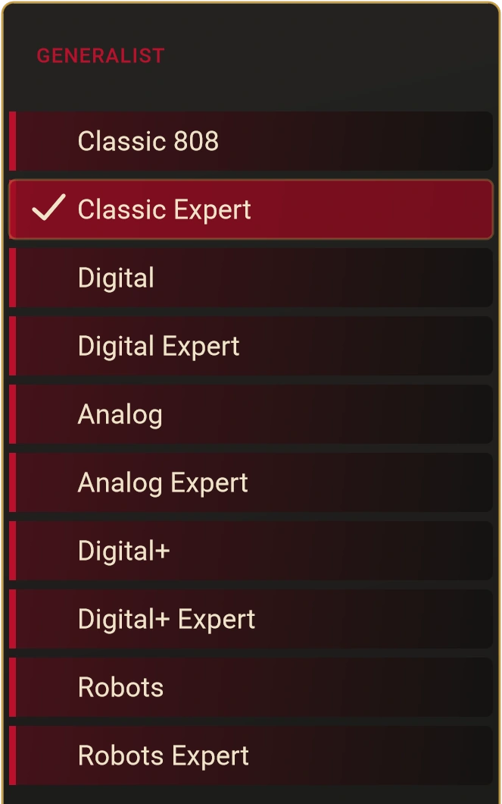
SWARA XT / 1.2.3 · HYBRID MONOSYNTH + SEQUENCER
Build the sound. Shape the sequence.
A hybrid monosynth and sequencer for expressive basslines, resonant leads and experimental patterns. Explore 35 oscillator choices, shape them with a Classic four-pole filter, and turn a note into movement.
Made to be heard. Built to be played.
Hear SWARA XTMac from the store · Windows & Linux free under GPLv3.
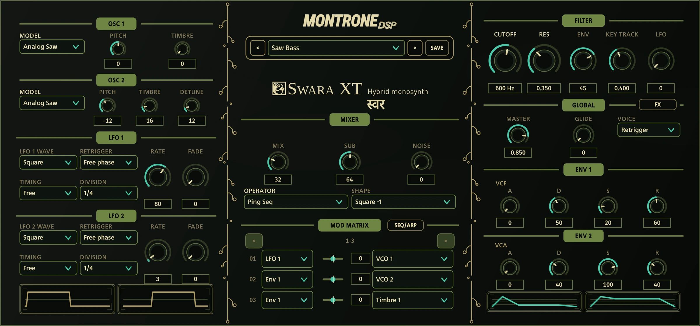
Sound. Shape. Sequence. Generate. Perform.
Start with synthesis. Change the attack, tune the body and shape the decay at the source — from a focused kick to a loose clap or a ringing metallic voice.
Voices 1–3 and 4–6 form two groups of low, body and top percussion. Choose a model for each voice, layer complementary sounds and balance all six in one panel.
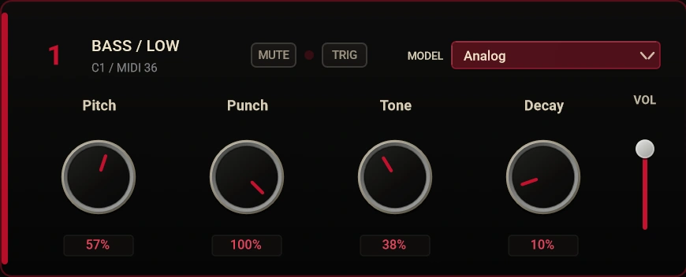
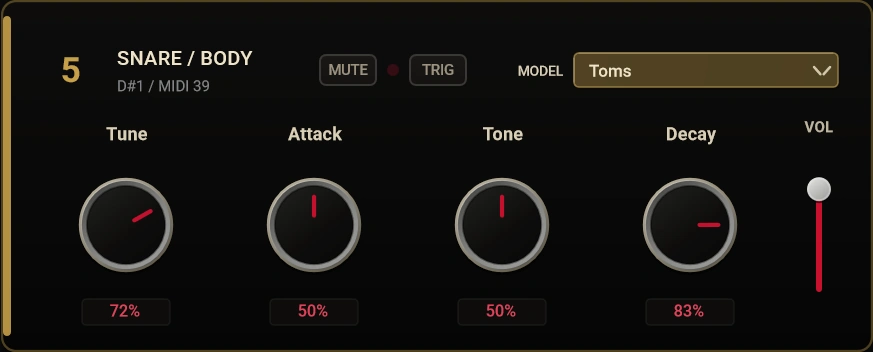
Use an LFO for repeating motion, an Envelope for a shaped change, or Knob Wizard for evolving parameter variation. Multi-target routing lets a modulator reach different voices with independent, bipolar depths.
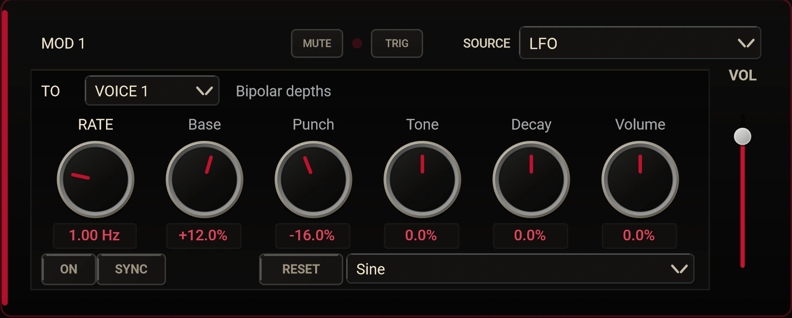
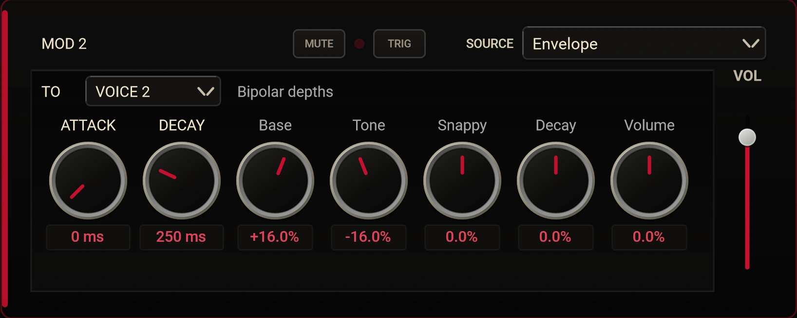
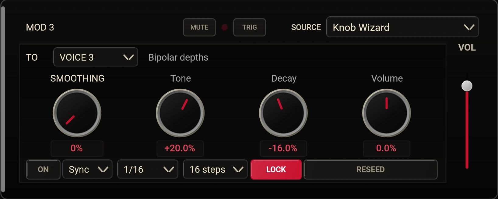
Open any detail at full resolution. On mobile, swipe to inspect the controls.
The selector groups models into four families. Generalist models respond to the voice’s low, body or top position; dedicated percussion models bring their own controls. Classic Hat adds a dedicated hi-hat voice.
Classic, Digital, Analog, Digital+ and Robots, with Expert variants.

Toms, Wood Conga/Tom and Bongo for pitched bodies.
Rimshots, claves, claps and maracas for rhythmic detail.
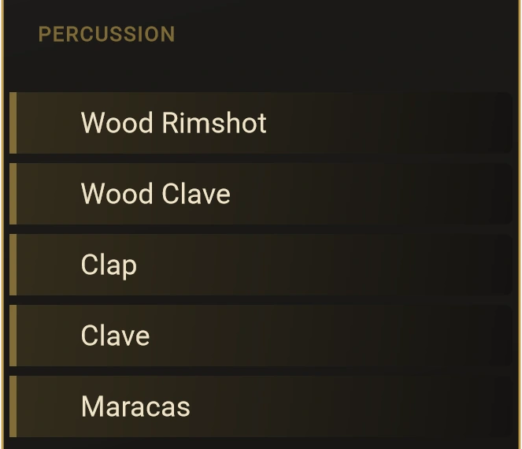
Ride, bells, cymbals and the Open Percussion family.
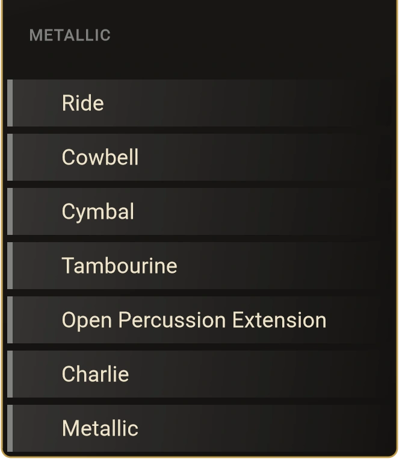
The real model selector, shown in four readable details.
MX2 provides the voices; your DAW or external MIDI sequencer provides the pattern. Play it from pads, program a groove or send generated MIDI — then mix each part on its own terms.
Trigger the voices with their assigned MIDI notes and adjust velocity response to suit the performance. Keep rhythm editing in the sequencer you already know.
A stereo Main output and six dedicated stereo voice outputs let you EQ the kick, compress the snare and send percussion to different effects. Enable the extra outputs in a host that supports multi-output instruments.
Keep the source dry and direct, then build the space around it with your own delays, reverbs or outboard. Output availability and routing depend on the host.
Kick + bass: use Voices 1 and 4 as complementary low voices. Reduce the pitch sweep of one, then adjust tuning, decay and balance to separate the impact from the bass body. The Jak2 preset is a starting point for this approach.
Hardware mixing: where your audio interface provides enough outputs, send the dedicated voice channels from the DAW to separate mixer inputs. Your EQ, sends and outboard become part of the instrument.
macOS · VST3 / AU | Windows / Linux · VST3
Two skins, the same instrument. Choose Dark or Light without changing the layout.
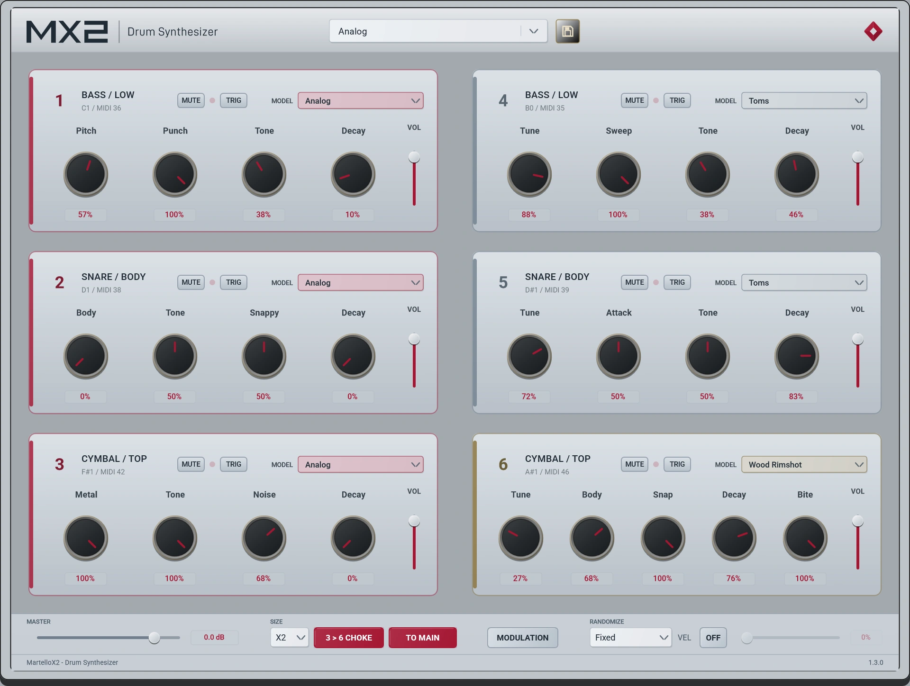
FeedbackFrom the field
MX2 (formerly Martello). Artist feedback from the instrument’s earlier releases; quotations preserved as received.
MX2 release qualification combines automated engine checks with plugin validation. Testing covers sound generation, state handling and host integration.
The idea began around 2014, through an interest in Eurorack, resonators and the character of struck objects. Martello grew out of that search for percussion that could be shaped at the source.
MX2 carries that approach into two engines and six voices: direct controls, model-specific parameters and room for your own sequencing and mixing choices.
The instrument has evolved; the intention remains the same. Give musicians a starting point they can tune, push and turn into their own sound.
MX2€29.90
Get the six-voice MX2 drum synthesizer, with access to future updates and the existing 7-day money-back guarantee.
MX2 Trial3-day trial
A free 3-day MX2 trial is planned. Visit the trial page for its current availability before downloading.
Membrana
Early access on 15 October ships two of five planned engines for membranes, bodies, and tuned percussion - built around exciter physics and resonator geometry.
Membrana is a multimodal synthesizer, not a sample player. Marimba brings classic membrane strike and bar resonance. Modern Modal shapes resonant body tone. Three more engines follow in later releases.
One instrument, five engines planned - early access starts with Marimba and Modern Modal.
Marimba
Struck membrane and marimba bar synthesis - skin tension, body knock, and the raw attack of physical instruments distilled into playable sound. Shape contour, damping, and decay for drums, skins, bars, and tuned percussion.
Modern Modal
Modal resonator modeling for membranes, plates, and vibrating bodies. Sculpt overtone structure, geometry, and damping with surgical control - from dry, focused strike to evolving harmonic bloom and long, singing decay.
ListenSoundCloud
Nobuo Uematsu - To Zanarkand arranged with two Membrana voices and Galleria spatial FX - marimba strike, modal body tone, and sculpted hall space in one piece.
Aura is a dedicated shimmer and space processor for expansive reverbs, evolving harmonic tails, and deep atmospheric processing without a modular workflow. Long algorithmic spaces, pitch-shifted feedback, dense diffusion, and stereo motion live in one focused panel built for immediate sound shaping.

Aura is built for harmonic reverberation, evolving ambience, and deep spatial sound design - octave-up shimmer, dual-voice stereo bloom, dark evolving reverbs, metallic clouds, and downward-shifted cinematic tails without a modular maze.
Long Space opens a clean, wide synthetic hall. Dark Bloom grows denser behind the source. Metallic Cloud sits between reverb, resonator, and diffused digital texture. Each mode has its own tank, diffusion, feedback, and stereo behaviour - not a minor preset variation.
Octave Halo and Dual Halo raise clear modern harmonics inside the reverb structure. Deep Shift adds controlled downward weight. Classic Shimmer and Classic Dual give warmer, denser traditional bloom with broader stereo return. Shifted sound recirculates through the tank instead of sitting as a simple pitch effect after the wet signal.
Aura is built from reverberation networks, pitch transformation, diffusion, filtering, modulation, and stereo projection. Keep a subtle halo around the source, or push into dense, unstable, highly artificial environments that become part of the composition.
Mix, Decay, Bloom, Motion, Pitch, Feedback, Tank, Tone, Width, and Output stay consistent while each mode reinterprets the architecture underneath. Motion, Bloom, diffusion, and pitch feedback keep long tails evolving instead of freezing into a static wash.
Every MontroneDSP release is checked through automated validation, internal signal analysis, stress testing, and human musical testing.
OwnershipFormats · Install · Activation
Aura ships as 64-bit VST3 only - no standalone application. macOS includes a .pkg installer, or copy the MontroneDSP VST3 folder into your system or user plugin directory. On Windows, place it in your VST3 folder (typically C:\Program Files\Common Files\VST3). On Linux, use your system or user VST3 directory, then rescan in your DAW.
After checkout, your license key appears on the Aura download page. Open Aura, paste the key in License or About, and activate. Each perpetual license covers up to three machines.
Aura€14.95 · 50% off
50% off — perpetual license for macOS, Windows, and Linux VST3. Was €29.90.
Start with two oscillator sections: analog shapes, phase distortion, FM, wavetables, noise and formants. Then decide how they meet. Ring, Sync, XOR, Fold and the other operators turn a simple mix into a sound-design decision.
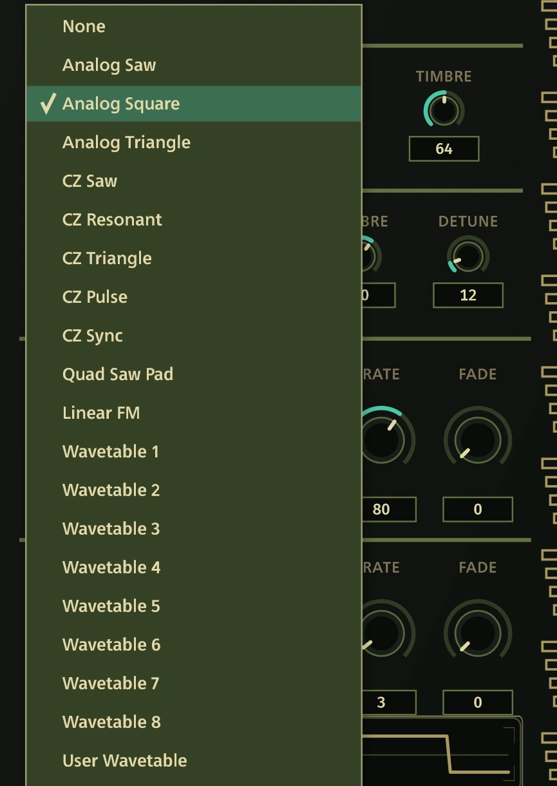
The Timbre control follows the selected model. Add a sub oscillator and noise for body and texture, then shape the result with the filter and envelopes.
A circuit-derived Classic IR3109 four-pole low-pass filter shapes the voice. ENV and LFO directly control the native filter depths; the 12-slot matrix opens up independent routes for animation and expression.
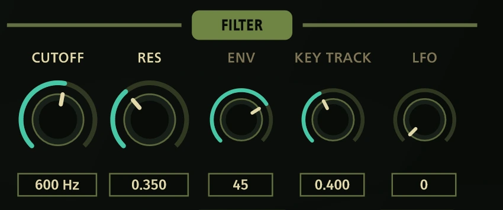
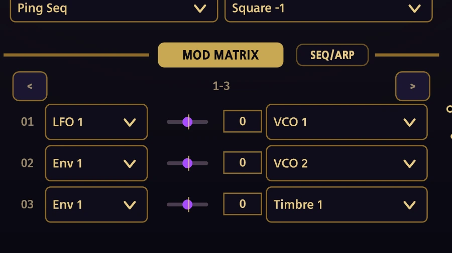
Follow it with the optional DSP-board effects: 16 programs plus Off, from distortion and comb filtering to delays, looper and pitch.
Program a bassline, play an arpeggio, or build a stored sequence. Sixteen steps, swing, gate and rhythmic division put the groove in your hands. Run freely or follow the host clock; keep notes, events, velocity and controller values within reach.
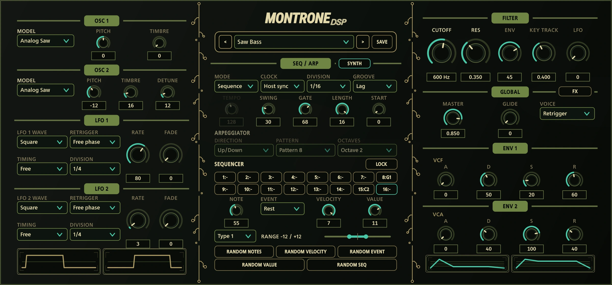
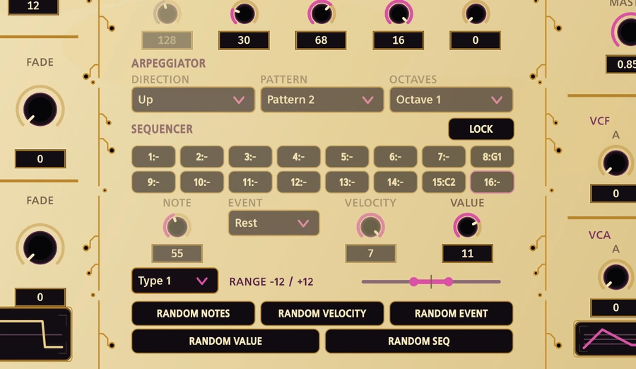
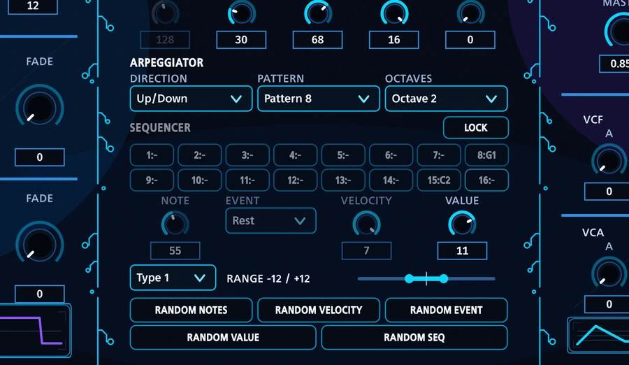
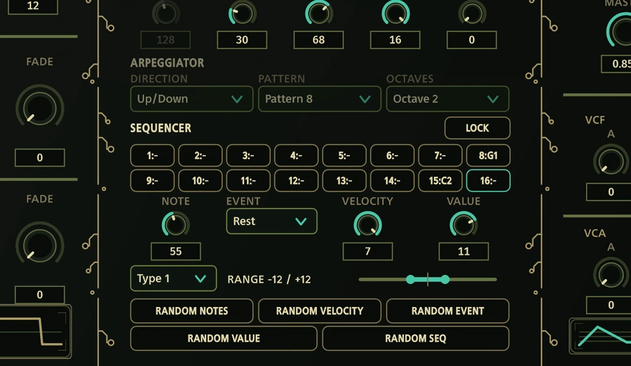
Change the notes and keep the rhythm. Vary the velocity, introduce rests and ties, or move the controller lane. Five selective generators let you choose what changes. LOCK holds the pattern and Seq/Arp settings while you audition another preset.
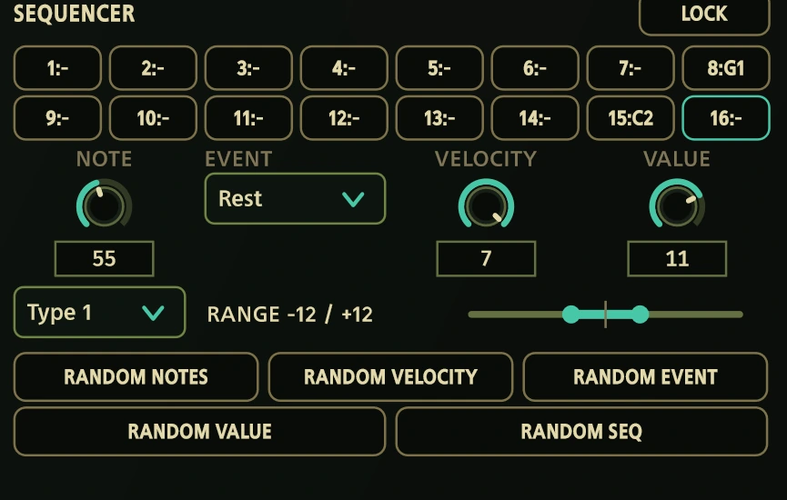
Glide between notes, choose legato or retrigger, and browse 57 factory programs. Save your own sounds from the front panel. From an insistent bassline to a slowly evolving drone, the synthesis and sequence stay in the same workflow.
Five skins, the same instrument. Choose Pastel, Midnight Gold, Jungle, Neon Cobalt or Rosso Corsa without changing the layout. Panel decorations add another layer of character; below, Legacy and PCB Trace share the same Jungle patch.
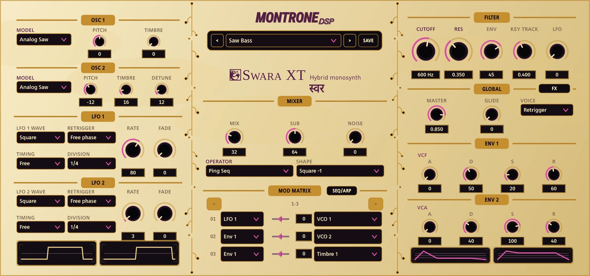
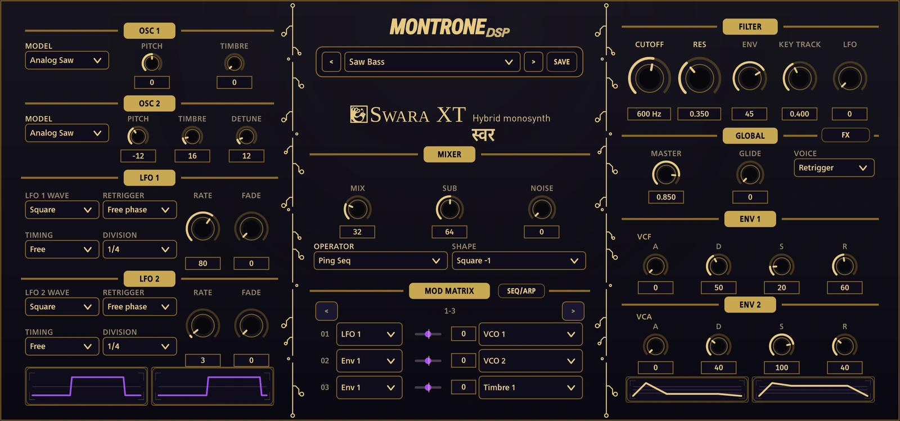
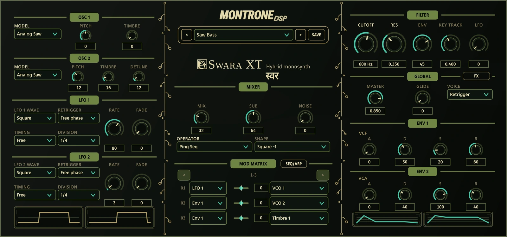
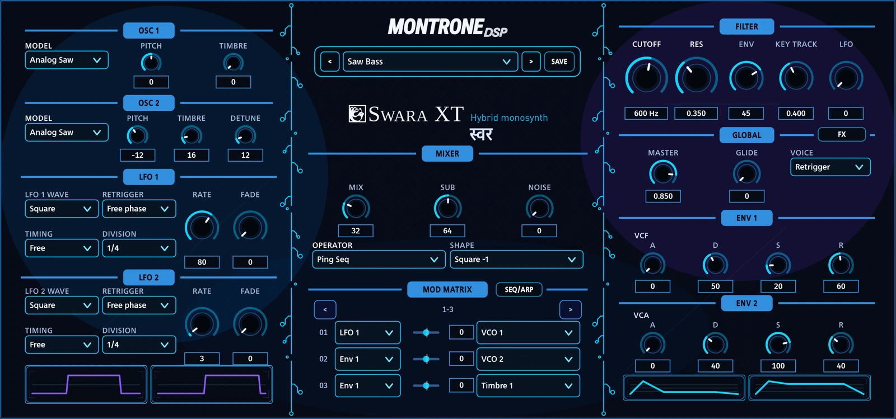
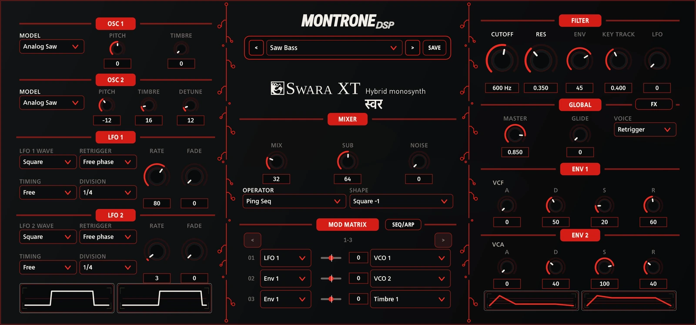
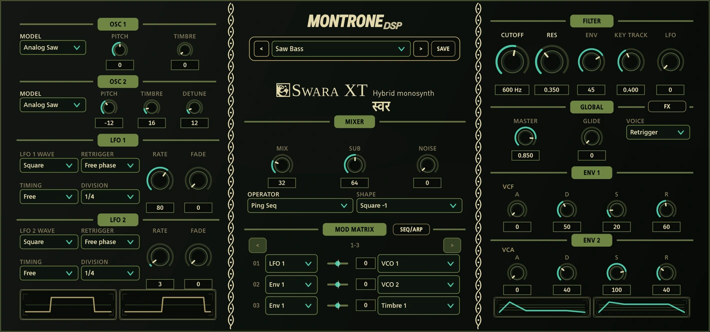
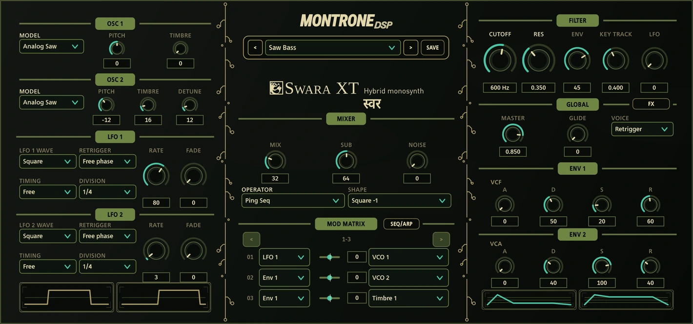
FeedbackFrom the field
Formats
Windows x64 and Linux x86_64 ship free as VST3 and Standalone under GPLv3. macOS ships as VST3, AU and Standalone from the store. To install manually, copy Swara XT.vst3 into your VST3 folder and rescan the DAW — on Windows a typical location is C:\Program Files\Common Files\VST3; on Mac and Linux, use your system or user VST3 directory.
macOS · Visit the storeDownloads
Official free builds from the latest GitHub release. Accept the license, then download Windows or Linux.
Windows SHA-256: b8b57bad4269d357f587b280e00095a58e27dbfa1af52bd7165bec3389849185
Linux SHA-256: 908b622a77f97bd6067b0c9dcf29cf4dd0f847af650a0b23f2583630b71c2d07
Open source, independently reviewed

Linux
At MontroneDSP, we are strong believers in Linux and open-source software.
Linux has become an increasingly capable platform for music production, offering excellent performance, flexibility, and a growing ecosystem of professional audio tools. We actively support Linux and test our plugins on a selection of commonly used distributions and desktop environments.
A stable and widely supported choice for audio production. Ubuntu LTS is our primary reference environment and is a good option for users who want a conventional Linux desktop with long-term support.

A stable, polished option for users who prefer a preconfigured KDE-based environment. Best suited to Flatpak-based DAWs such as Bitwig and user-installed plug-ins. Because SteamOS uses an immutable system image, advanced system-level audio modifications may require additional setup.
Caution: the SteamOS installer can wipe existing disk data. Follow the correct install procedure carefully, and always back up important files first.
If you are new to Linux and want the most straightforward, conventional setup for music production, Ubuntu LTS remains an excellent starting point.
For a preconfigured KDE desktop and Flatpak-based DAWs, SteamOS is a tested alternative — with the caveats noted above, including the installer disk-wipe risk.
Linux audio setups can vary considerably between distributions, audio servers, DAWs, drivers, and system configurations. For this reason, we recommend keeping your system updated and using the current version of your DAW and plugin host whenever possible.
Our Linux plugins are distributed in VST3 format.
When installing manually, make sure your DAW is configured to scan the directory containing the plugin. After installation, restarting or rescanning your DAW may be required before the plugin appears.
System
Minimum is a 64-bit processor, 4 GB of RAM and 100 MB of free disk, with a VST3-capable host. For comfortable real-time use we recommend a modern multicore CPU — Intel Core i7 or AMD Ryzen 5 or better — and 8 GB of RAM. Very small audio buffers at high sample rates cost real CPU. Host sample rates from 8 kHz to 384 kHz are supported. Filter processing quality is selectable from the right-click menu as High, Normal or Eco; Eco trades oversampling for CPU without changing the circuit.
Linux x86_64 · VST3 + Standalone · Free
curl -fsSL https://raw.githubusercontent.com/montronedsp/SWARAXT/main/scripts/install-linux.sh | bashOpen source is an important part of the MontroneDSP philosophy.
Where possible, we contribute to and build upon open technologies, and several of our projects are made available publicly so that musicians, developers, and curious users can explore, learn from, modify, and contribute to the software.
Parts of the synthesis engine are derived from the Mutable Instruments Shruthi-1 firmware by Émilie Gillet.
We believe Linux and open-source development can play an important role in keeping music technology accessible, transparent, and open to experimentation.
LayaPreview
Lo-fi drums and a performance sequencer built for ideas that move. All Laya builds will be free.
Laya brings together a curated collection of selected, experimental and previously unreleased drum-sequencing algorithms in a single instrument. Its sequencing engines range from focused techno and drum & bass generators to more exploratory rhythmic systems, with an emphasis on patterns that feel playable, mutable and alive rather than simply random.
Interface
Laya can be operated through a traditional GUI, a fast command-line interface, or both at the same time. Generate, mutate, lock, randomize and reshape rhythms in real time, then use its internal drum voices or send the resulting MIDI directly to external instruments and drum racks.
Core
At its core, Laya is a powerful performance sequencer: deterministic when needed, unpredictable when invited, and designed to move continuously between repetition and variation.
Contribute
Have your own idea for a sequencer?
We’re open to integrating new rule-based generative sequencers into Laya. If you have an original sequencing concept, algorithm, probability system, pattern generator, or performance logic you think belongs in the project, write us an email and tell us about it.
We are specifically interested in deterministic, algorithmic, stochastic, and rule-based generative systems that can run efficiently as part of the instrument.
We do not accept generative-AI, inference-based, neural-network, cloud-compute, or GPU-dependent workflows.
If your idea can be expressed as musical rules, mathematics, state machines, probability, pattern transformation, or other lightweight algorithmic logic, we’d be happy to hear from you.
Linux
At MontroneDSP, we are strong believers in Linux and open-source software.
Linux has become an increasingly capable platform for music production, offering excellent performance, flexibility, and a growing ecosystem of professional audio tools. We actively support Linux and test our plugins on a selection of commonly used distributions and desktop environments.
Our Linux builds are tested on:
A stable and widely supported choice for audio production. Ubuntu LTS is our primary reference environment and is a good option for users who want a conventional Linux desktop with long-term support.
A stable, polished option for users who prefer a preconfigured KDE-based environment. Best suited to Flatpak-based DAWs such as Bitwig and user-installed plug-ins. Because SteamOS uses an immutable system image, advanced system-level audio modifications may require additional setup.
Caution: the SteamOS installer can wipe existing disk data. Follow the correct install procedure carefully, and always back up important files first.
If you are new to Linux and want the most straightforward, conventional setup for music production, Ubuntu LTS remains an excellent starting point.
For a preconfigured KDE desktop and Flatpak-based DAWs, SteamOS is a tested alternative — with the caveats noted above, including the installer disk-wipe risk.
Linux audio setups can vary considerably between distributions, audio servers, DAWs, drivers, and system configurations. For this reason, we recommend keeping your system updated and using the current version of your DAW and plugin host whenever possible.
Our Linux plugins are distributed in VST3 format.
When installing manually, make sure your DAW is configured to scan the directory containing the plugin. After installation, restarting or rescanning your DAW may be required before the plugin appears.
Open source is an important part of the MontroneDSP philosophy.
Where possible, we contribute to and build upon open technologies, and several of our projects are made available publicly so that musicians, developers, and curious users can explore, learn from, modify, and contribute to the software.
We believe Linux and open-source development can play an important role in keeping music technology accessible, transparent, and open to experimentation.
SenecaPreview
Seneca is a kick rumble generator for weight, body, and controlled sub motion.
A focused tool for designing kick rumble — the dense low layer that sits under a kick and gives it mass. Seneca is still in early development; leave your email to hear when more is ready.
Newsletter
Insert your mail to know more.
Scaffold only for now — no list is connected yet. Drop your address and we will wire this up when Seneca is ready to share.
StonesSteamOS · Linux
Routing, mapping, and performance control for SteamOS, Ubuntu, Fedora, and other Linux desks — the layer between controllers and sound.
Shape MIDI paths, transform notes and CCs, and keep live control immediate. Stones is proudly developed on SteamOS and ships for SteamOS, Ubuntu, Fedora, and the broader Linux desktop — GPLv3, no Windows or macOS.
Core
Stones treats MIDI as performance material: clear routing, deterministic transforms, and controls you can play without leaving the moment.
Inside Stones5 instruments
No separate installs and no extra downloads — Stones already knows how to route, map, and scene each of these. They run side by side inside the same workstation.

Synthesized percussion — struck objects, resonators, and modal bodies rather than samples.


A hybrid monosynth and sequencer — 35 oscillator models, a resonant IR3109 filter, and a 16-step sequencer.

A kick rumble generator for weight, body, and controlled sub motion under the low layer.

Lo-fi drums and a performance sequencer built for ideas that evolve, mutate, and stay playable.

A six-operator FM instrument closely modeled on the Yamaha DX7. Developer: Pascal Gauthier (asb2m10).
Controls
Grounded in the simplicity of ancestral instruments, Stones keeps control clear while looking to the future. Version control is built into the workstation through Versione, while CLI control is designed as a central part of the MIDI workflow.
CompanionBuilt in
VERSIONE keeps checkpoints and named versions of your work - local copies you control, snapshots you can reopen as copies, never silent overwrites. It ships as part of the Stones workstation.
PlatformLinux only
For SteamOS, Ubuntu, Fedora, and the rest of Linux — a MIDI workstation with no Windows or macOS builds, released under GPLv3.
Primary LTS desktop target for studio installs and long-term support.

A first-class RPM / PipeWire desk for current Linux audio tooling.
Free software license — open to study, modify, and redistribute.
OutputBounce & export
Stones is a workstation, not a walled garden. Capture a pass while the routing is still in your hands, bounce it, and drop it into the session you already have open.
Anything that opens a MIDI or audio file will take it. These are simply the hosts we test against.
StonesSteamOS · GPLv3
Proudly developed on SteamOS — notify when the first SteamOS / Ubuntu / Fedora build is ready.
Galleria
Immersive spatial processing built around bright hall reflections, hybrid delay, and motion-driven 3D placement.
Galleria is a spectral gallery reverb - not a static room preset. Shape space, delay, orbit, and texture in one focused panel, from dry public architecture to long tails that move through the field.
Galleria is a spatial instrument where reflections, delay, and motion are composed together - bright, smooth, and deliberately placed.
Spatial engine
Classic and spatial reverb modes with independent early/late balance, density, and diffusion. Filter the space, freeze the tail, and push reflections into motion without losing clarity.
3D motion
Source X/Y/Z placement, orbit rate and depth, width, doppler, occlusion, and air - with a live spatial radar for performance-led positioning. Delay and space follow the same motion logic for cohesive immersion.